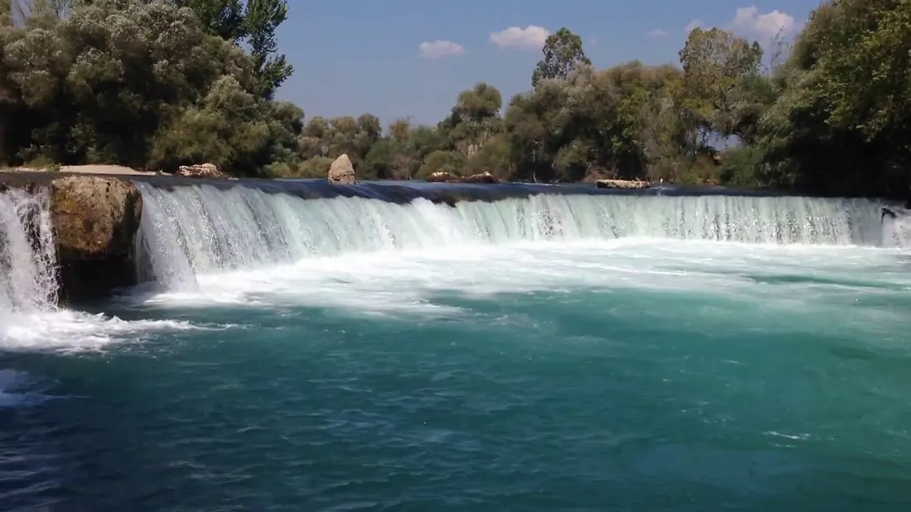
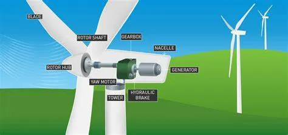
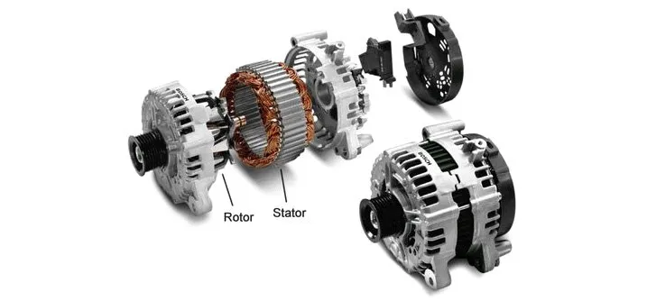

Bugünün modern dünyasında elektrik, artık bir çok insan için su, hava gibi temel bir ihtiyaç haline gelmiş durumda. Buna rağmen, dünyada 1 milyardan fazla insanın yine de düzenli olarak elektriğe erişimi yok. Elektriğe erişimi olmayan insanların bir çoğu, bulundukları bölgenin yakınlarında elektrik üretimi tesislerinin olmamasından dolayı, bu önemli araçtan mahrum olarak hayatlarını sürdürüyorlar. Örneğin gıda saklamak için buzdolabı değil eski usul kilerler kullanıyorlar veya sıcak suya ihtiyaçları olduğunda ani su ısıtıcısı kullanmak yerine ocaklar kullanıyorlar. Biz akıllı telefonlarımızı şarj etmek için etrafta priz ararken onlar, … ama bir saniye akıllı telefon mu ?
Bizim için artık alışkanlık haline gelen bazı şeylerin, bir başkası için lüks olabilmesi durumu maalesef elektrik için de geçerli. Elektriğin kıymetini anlamak için bir gün boyunca telefonunuzun şarjının olmadığını hayal edin veya tüm Türkiye genelinde elektrikler 2 saatliğine kesilmiş olsun. Aslında bunu yakın sayılabilecek bir tarihte yaşadık. 31.03.2015 tarihinde saat 10.30 sıralarında, Türkiye’de çok büyük kapsamlı bir elektrik kesintisi yaşanmıştı. Yaklaşık 5 saat kadar süren bu kesinti şüphesiz hepimiz için dayanılmaz bir şeydi.
Bu uzun giriş cümlelerini, zaten birçoğumuzun bildiği gerçekleri tekrar su üstüne çıkartmak için kurdum. Çünkü, bu makalemizde anlatmayı hedeflediğim elektriğin üretim aşamalarını, başka türlü içselleştirmenin yolu olmadığı kanaatindeyim.
Bir önceki makalemizde elektrik enerjinin maddelerin atomlarında proton-elektron dengesi sayesinde oluşup taşınabildiğini söylemiştik. Peki birincil enerji kaynaklarını kullanarak bugün evlerimizdeki prizlerimize gelen elektrik nasıl üretiliyor biraz da bunu inceleyelim.

Yukarıda verilen şematikten de anlaşılacağı üzere, birincil kaynakların kimyasal, radyoaktif tepkimeleri sonucu açığa çıkan veya kendilerinde mevcut olan kinetik enerji, elektrik türbinlerinin dönmesini sağlıyorlar. Türbinlerin dönmesiyle içinde mıknatıslar olan statorda bir manyetik enerji meydana çıkıyor. Bu manyetik enerji de elektronları harekete geçirerek elektrik enerjisini oluşturuyorlar. Daha sonrasında da elde edilen elektrik, çeşitli iletim kanalları vasıtasıyla evlere, üretim tesislerine ve diğer son kullanıcı noktalarına ulaştırılıyor.
Elbette elektrik üretim aşamaları burada sadeleştirilmiş şekliyle verildi. Gelin bu işlemlerin biraz daha ayrıntısına girelim.

Manavgat şelalesi, Antalya
Doğada her zaman için kinetik enerjiyi hazır bir şekilde bulamayabiliriz. Bulabilsek dahi kullanılabilir hale getirebilmek için büyük ölçekli yatırımlar ve projeler yapılması gerekiyor. Örneğin Manavgat şelalesini ele alalım. Yaklaşık 3–4 metre mesafeden düşen sudaki potansiyel enerji kinetik enerjiye dönüşüyor. Ancak bu şelaleden türbin vasıtasıyla hem doğanın dengesini bozacağından hem de verimli olmayacağından, elektrik üretimi söz konusu değil. Ancak bunun yerine daha büyük ırmaklardaki suların biriktirilmesiyle oluşturulan yapay göletlere kurulan hidroelektrik barajları özellikle güneydoğu Anadolu illerimizde yüksek kapasitede elektrik üretimi yapmaktadırlar. Burada, yapay göl veya havzalarda biriktirilen suyun sahip olduğu potansiyel enerjinin baraj kapaklarının açılmasıyla kinetik enerjiye dönmesi sağlanıyor. Bunlar da türbinlerin dönerek elektrik üretmesini sağlıyor.

Benzer bir mantık rüzgar türbinlerinde de geçerli. Basınç farkı sebebiyle hava taneciklerinin bir hız kazanması sonucu rüzgarlar oluşur. Bu hız sayesinde açığa çıkan kinetik enerji de rüzgar türbinlerine bağlı olan pervanelerin dönmesini sağlar. Bu sayede türbindeki rotor, statorda bir manyetik alan değişimi oluşturur ve bunun neticesinde elektrik enerjisi açığa çıkar.
Bir diğer uygulama alanı da suyu buharlaştırarak oluşturulan kinetik enerjiden faydalanmak yolu olarak söylenebilir. Burada da suyu buharlaştırmak için gerekli olan termal enerji, termik veya nükleer santrallerde çeşitli yollarla açığa çıkartılabilir. Örneğin kömür, doğal gaz gibi fosil yakıtlar kullanılarak kazanlarda ısı enerjisi üretilir. Kazanın içinden geçen borulardaki su buharlaşır ve yine borular vasıtasıyla türbine aktarılır. Nükleer santrallerde ise ısı enerjisi uranyum, toryum gibi radyoaktif elementlerin fizyon tepkimeleri üretilir. Yine aynı mantıklar bu ısı enerjisiyle su buharlaştırılır ve türbinlere aktarılır.
Peki türbinlerin dönmesiyle elektrik nasıl oluşur ?

Elektrik türbinlerinde bu enerjinin dönüştürüldüğü yer, alternatörlerdir. Alternatör, iki parçadan meydana gelir: rotor ve stator. Rotor türbindeki dönen hareketli parçadır ve statorun içine girecek şekilde konumlandırılmış doğal veya harici bir DC kaynak ile oluşturulmuş mıknatıslar bulunur. Stator da ise çeşitli bağlantı şekilleriyle birbirine bağlanmış olan iletken teller sarılmıştır. Rotor döndükçe mıknatısların da dönmesiyle bir manyetik alanların (S ve N kutuplarının) yeri sürekli değişir. Bu değişim sebebiyle de statora sarılı olan iletken kablolarda bir elektrik akımı oluşur. Yanda bir alternatörün iç kısmını görebilirsiniz. Biraz daha açıklayıcı olması için bu videoyu tavsiye edebilirim.
Bir sonraki makalemizde üretilen elektriğin, son kullanıcıya dağıtımını konuşacağız. Görüşmek üzere.
Kaynakça:
- Rüzgar Türbini Nedir? Rüzgar Türbini Çalışma Prensibi Nasıldır? | Tesisat
- How electricity is generated — U.S. Energy Information Administration (EIA)
- Electrical generation — Energy Education
- How Electricity Generation Really Works — YouTube
- Electricity 101 | Gas Power Generation | GE Power — YouTube
- Energy — Electricity generation — OECD Data